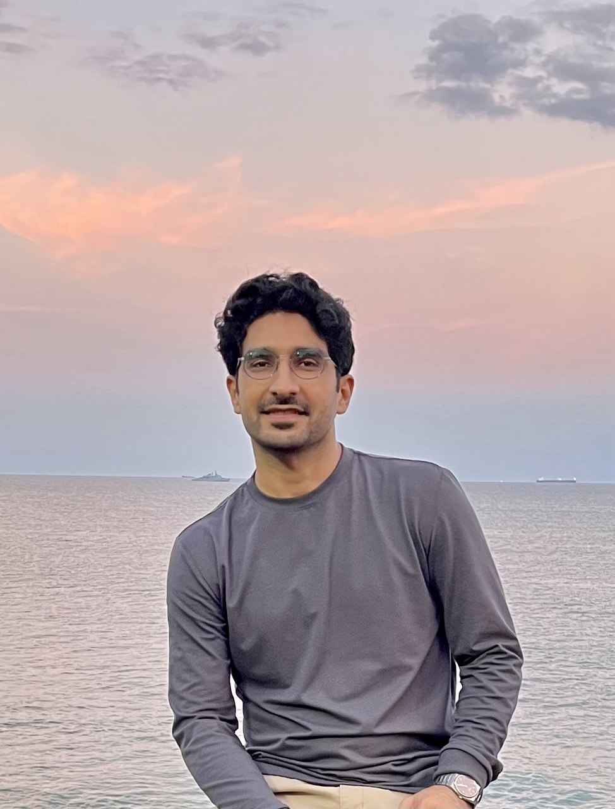

1.0 / Amir Jafari
Behavioral neuroscience, EEG/ERP, and quantitative analysis of biological systems.
I am a multidisciplinary researcher working across neuroscience, animal behavior, addiction research, signal processing, and biomedical science.
My academic path connects pure chemistry, medical nanotechnology, behavioral neuroscience, and computational analysis. I am interested in how biological systems change across development, treatment, and behavioral context, especially when those changes can be studied through behavior, neural signals, and quantitative data workflows.

1.1 / Current focus
My work is centered on behavioral neuroscience, addiction-related phenotypes, EEG/ERP interpretation, time-series analysis, and statistical approaches for complex biological data.
I prefer research questions where experimental biology and quantitative analysis are connected directly: behavior with mechanism, neural signal with context, and model output with biological interpretation.